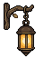
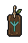

STAGE 3 · MAGICAL DECORATION SET · REVIEW CANDIDATE
A few woodland lights
A branch-mounted lantern, carved rune, friendly wisp, tiny warm mote and hanging leaf strand. The fuller-foliage portrait and approved forest background remain unchanged.
Actual Unity preview
Art-only top-area scene with static Rattlebones and three enemies. This is a Unity capture, not live combat. No changes to production, the board or lower HUD.
Native modular artwork
Five designs, nine editable parts. All native PNGs have binary transparency and padded silhouettes. Light/glyph layers are separated for later animation; these previews are stills.
Branch lantern48×64 nativeCarved rune32×48 nativeWisp18×22 nativeWarm mote8×8 nativeHanging leaves38×47 native Selected PixelLab sources → LibreSprite cleanup
Lantern candidate 02 and rune candidate 15. Shape masks are preserved; localized palette cleanup uses the existing forest material ramps. Two PixelLab jobs cost 20 generations total. Existing sources supply the wisp and leaves.
Raw lantern
Native cleaned lanternRaw rune
Native cleaned rune
Verified
Unity compilation and the Stage 3 scene test passed. Both resolutions use exact integer pixels. Hiding the additions reproduces the approved scene pixel for pixel; all 84 prior image bindings and positions match. Nine LibreSprite documents reopen with identical RGBA exports. Native palette and dimensions:
| Module | Canvas | Opaque colors |
|---|
| Lantern_Mount | 48 × 64 | 7 |
| Lantern_Body | 48 × 64 | 6 |
| Lantern_Light | 48 × 64 | 3 |
| Rune_Plaque | 32 × 48 | 11 |
| Rune_Glyph | 32 × 48 | 1 |
| Wisp_Core | 18 × 22 | 1 |
| Wisp_Aura | 18 × 22 | 2 |
| Firefly_Mote | 8 × 8 | 3 |
| Hanging_Leaf_Strand | 38 × 47 | 10 |
Handoff notes · Unity verification · Native verification · All lantern candidates · All rune candidates
Stage 3 is complete and waiting for your approval. No Stage 4 work or merge.